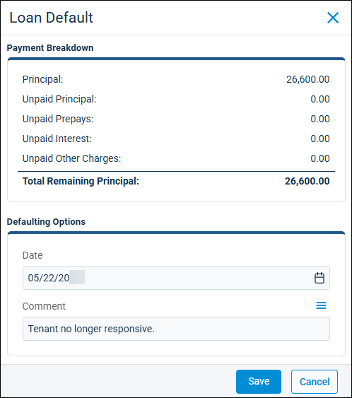

Source: https://rmxhelp.rentmanager.com/Topics/Express/Action/Loans-Receivable-Default.htm
Default a Loan Receivable
If you have any loans receivable where you need to write off the remaining principal as bad debt, you can default the loan in Rent Manager. For example, you may have a tenant who fails to submit installation payments for their loan and it is clear that they do not intend to pay it any further. By defaulting the loan, you write off what is owed as bad debt against the charge type you designated for bad debt in system preferences, and its associated expense account.
Related Preferences
The charge type used for defaulting loans is designated in system preferences in the Bad Debt Charge Type field. For more information, refer to Loans (System Preferences).
Related Privileges
| Group | Privilege | Column |
|---|---|---|
| Loans Receivable | Loans Receivable | View, Edit |
For more information, refer to Control User Access.
To default a loan receivable, do the following:
-
Go to
 arrow_forward Receivables arrow_forward Loans Receivable arrow_forward Loans Receivable and select a loan.
arrow_forward Receivables arrow_forward Loans Receivable arrow_forward Loans Receivable and select a loan.
The loan's details page displays. -
Next to the Pay Off button, click the drop-down arrow and select Default.

-
In the Payment Breakdown tile, review the totals of the unpaid charges that make up the Total Remaining Principal.
-
In the Date field, select the date on which the loan will be defaulted and closed. Today's date populates by default.
-
In the Comment field, enter a comment to provide context on the reason for defaulting the loan. This information displays on the tenant's list of transactions for this transaction.
-
On the confirmation pop-up, click Yes if you wish to proceed with defaulting the loan receivable.
The loan is closed and the remaining principal that was defaulted is applied to the charge type for bad debt.More Information
The defaulted amount displays as a Bad Debt Expense on the Profit & Loss report. For more information, refer to Profit & Loss (Report).